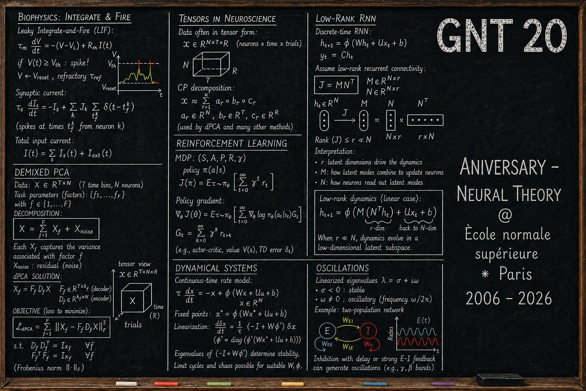

The Group for Neural Theory (GNT) at the École normale supérieure celebrates its 20th anniversary with a two-day workshop bringing together alumni, collaborators, and friends of the group to discuss the state of theoretical and computational neuroscience.
About the workshop

Over two days, the workshop will cover four thematic sessions — network heterogeneity & dynamics; cortical computations: perception, beliefs & decisions; motor control & preparatory dynamics; and inference, learning & efficient computation — bookended by four keynote lectures from Mate Lengyel, Cristina Savin, Ashok Litwin-Kumar, and Jonathan Pillow.
See the full program and talk abstracts.
Registration
Attendance is by invitation. For inquiries please write to kai.chen@ens.psl.eu.